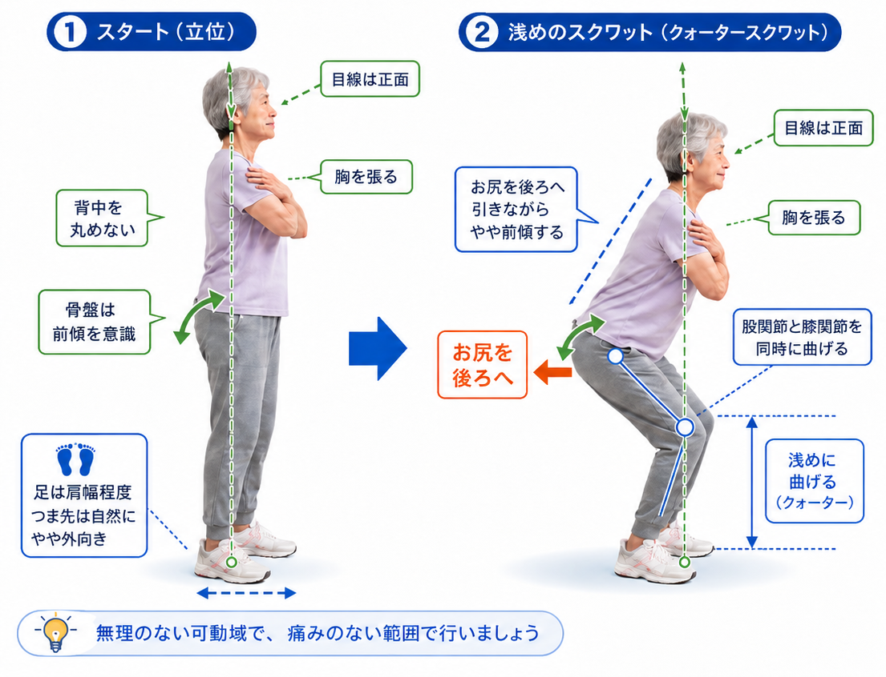

スクワット
浅めのクォータースクワットで、足腰の主要筋肉を安全に鍛えます。立ち座りや歩行の土台となる筋力を養います。
「お尻を後ろへ引く」が最重要ポイント
前のめりになりやすいので、まずお辞儀するように前傾しながらお尻を後ろへ引く動作を意識させましょう

📸 ①スタート（立位） → ②浅めのスクワット（クォータースクワット）
✅ 何に効く？
- 足ももの前後（大腿四頭筋・ハムストリングス）とお尻（大臀筋）を鍛える
- 特に大臀筋への高い効果がある
- 立ち座りや歩行に必要な下肢筋力の土台をつくる
📋 やり方（2ステップ）
1
スタート（立位）
足は肩幅程度・つま先は自然にやや外向き・目線は正面・胸を張る・背中・腰を丸めない・骨盤は前傾を意識
2
浅めのスクワット（クォータースクワット）
お尻を後ろへ引きながらやや前傾する。股関節と膝関節を同時に曲げる。深く曲げすぎず、浅めのクォータースクワットで行う
💬 声かけ例
動作を促す（最重要）
「お尻を後ろに引いて、ちょっとお辞儀するように前に倒れてみましょう」
効果を伝える
「立ち座りが楽になる筋肉を鍛えています。毎日の生活がぐっと楽になりますよ」
安全を確認する
「無理のない深さで大丈夫です。痛みや違和感があったらすぐ教えてください」
⚠️ 注意点
- 腰が曲がっている方は浅めに行う
- 後ろに倒れそうな場合は、まずお辞儀をするように前傾を指導する
- 膝のお皿がつま先を大きく超えないようにする（つま先より前はNG）
- 重心が後ろに行きすぎないようにする
💡 現場のポイント
無理のない可動域で、痛みのない範囲で行いましょう。「しゃがみすぎ」より「正しいフォームで浅く」の方が効果的です。まずお辞儀の動作から始めると理解しやすくなります。